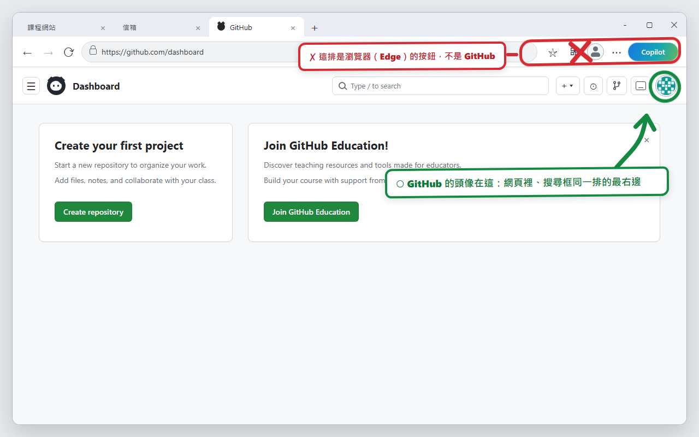
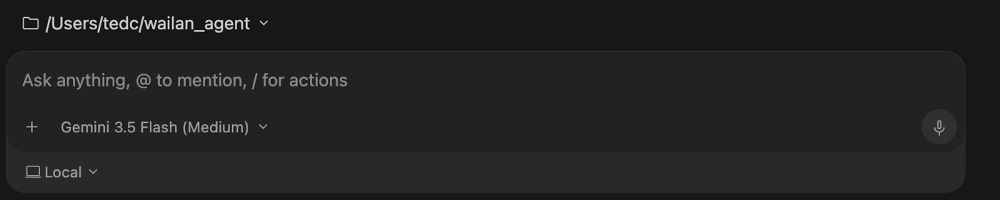
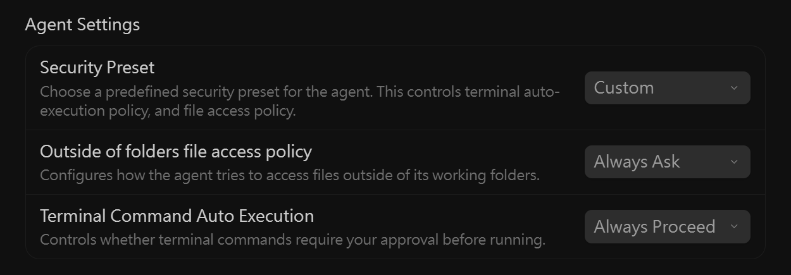
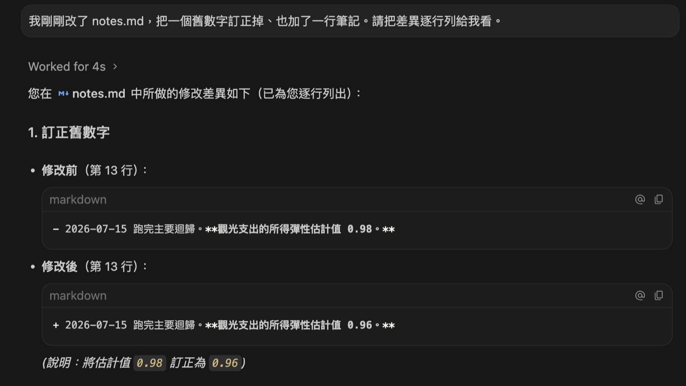
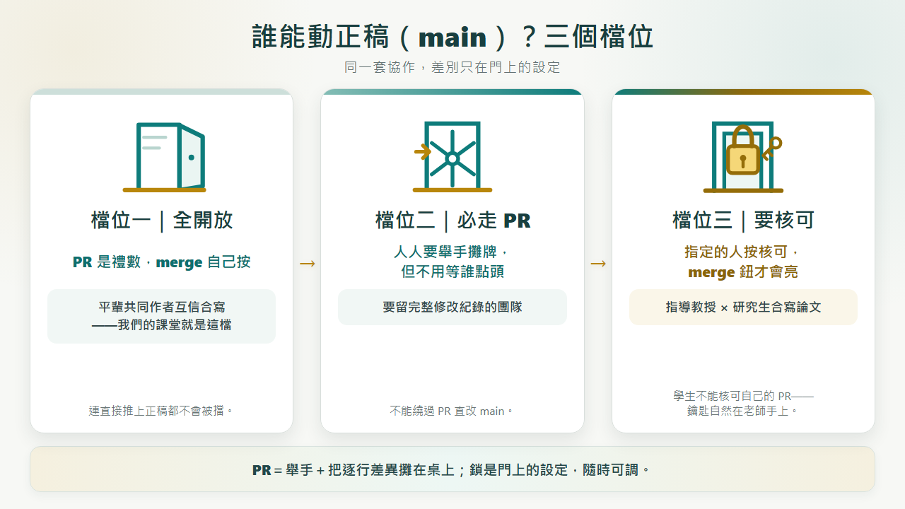

第一階段｜自己的研究專案
從零開始，走兩次完整日常循環。
開資料夾→加 Git→連 GitHub→建檔→diff→commit→push
再修改→再看 diff→再存／推→歷史→show／restore／revert
給大學教師的 2 小時動手工作坊
從零開始，走兩次完整日常循環。
兩人用同一個假論文 repo，交換角色各做一次。
AI 負責：把自然語言轉成操作、先列計畫、執行 Git、回報狀態、草擬 commit 與 PR 說明。
人負責：確認資料夾與公開範圍、看 diff、判斷研究內容、決定 restore、revert、merge 與刪除。
口訣：AI 提議與代操作；人看懂、驗收、拍板。
資料夾裡躺著 paper_v2_final_really.docx、final_v3_這次真的final.docx。哪版能跑、哪版投過稿，只剩考古學能回答；「上個月那版其實比較好」找不回來。
共同作者靠 email 附件往返，兩人同時改同一版，誰蓋掉誰的段落沒人說得清；「你改了哪裡」要靠肉眼比對。
AEA 等期刊已把可重現的資料與程式（replication package）當投稿門檻。「投稿當下的完整狀態」得隨時指得回去——資料夾備份撐不起這件事。
好問題。先列出做研究真正需要的五件事，然後你自己按按看，三個工具各做得到幾件：
你最近在用的 AI 工具（Claude Code、GitHub Copilot 這類），背後整天在跑 git——存檔、開分支、比差異，都是它們的日常。AI agent 一次改十幾個檔案是常態；沒有 git 當安全網，你連「它剛才到底改了什麼」都說不清。
指令 AI 都會，你不必背；但它可能改錯檔案、動錯分支、把不該上傳的東西上傳。概念你不懂，就只能全盤照收；概念懂了，你才看得懂它的計畫、驗得了它的差異、攔得住它的危險動作。這門課教的是指揮與監督 AI 的語言。
第 1、2 項約 30 分鐘；第 3–7 項要下載安裝，視網速可能要一小時以上。
卡住不用硬撐，直接問 AI。裝好 Antigravity（第 3 項）之後就問它——把錯誤訊息或畫面截圖貼進輸入框，請它一步一步帶你；還沒裝好之前，問你慣用的 AI 助手（ChatGPT、Gemini 都可以）。
這些勾只給你自己看——最後用第 9 項的自我檢查收尾。（勾選狀態存在這台電腦的瀏覽器裡，關掉再開還在。）目前完成：0 / 10



warmup-check/hello.md 真的存在、內容正確；③ 你說得出 AI 助手回報的 gh 帳號就是你的 GitHub 帳號。| 備援與延伸 | 定位 |
|---|---|
| Gemini CLI（Google） | 備援：同一個 Google 帳號可用的命令列版；Antigravity 裝不起來的人用它 |
| GitHub Copilot | 課後禮物：你通過 GitHub Education 驗證後，可免費使用 Copilot Pro（審核要數天到數週，行前信同步發動申請） |
| Claude Code（Anthropic） | 講師示範機：開場與攔停演示用，順便看到「不同 agent、同一套 git 概念」 |
〔課堂當天的教材從這一節開始〕以下各節上課會帶著走；課前想預習，就從這裡讀起。
每張卡三句話：白話是什麼、用論文日常打比方、AI agent 什麼時候用它。點卡片展開；實際操作請回到 P1–P9 與 C1–C6 的對應步驟。

標籤（tag）：替某個存檔點釘上好記的名字，例如 v1.0-submission。投稿那天在書脊貼標籤，半年後審稿意見回來，一句話翻回投稿當下的完整狀態。
標 ◆ 的詞看得懂就好、不用會用。點右欄可回到實際練習步驟；標示「課後延伸」的內容不列入課堂操作。
| 詞 | 英文 | 一句話 | 哪裡出場 |
|---|---|---|---|
| AI 助手 ◆ | agent | 你目前使用、能查看工作資料夾並代跑指令的 AI；本教材「AI 助手」與「agent」指同一類工具 | 全程 |
| 終端機 ◆ | terminal | 打指令的那個黑底視窗——本課由 AI 助手代打，你不必自己開 | 幕後 |
| Markdown | .md | 純文字檔，打開就能改；格式只有「標題前加 #」這種程度 | P3 |
| 版本庫 | repository（常簡稱 repo） | 資料夾＋它的完整修改紀錄 | P1 |
| 主線 ◆ | main | 預設的那條正式版本線 | P2 |
| 提交 | commit | 有註記的存檔點 | P4 |
| 暫存區 ◆ | index／staging area | 下一個 commit 預計保存的內容快照，不只是檔案清單 | P4 |
| 工作區 ◆ | working tree／working directory | 你目前實際看得到、正在編輯的檔案 | 全程 |
| 差異 | diff | 兩版之間逐行比對 | P6 |
| 歷史 | log | 存檔點的時間軸 | P8 |
| blame ◆ | blame | 這一行是誰、哪天、為了什麼改的 | P8 延伸 |
| 查看舊版 | show | 直接讀取舊 commit 的內容，不切換分支，也不修改目前檔案 | P9 |
| 還原工作檔 | restore | 用指定來源覆蓋工作區或暫存區的檔案；可能丟掉尚未 commit 的修改 | P9 |
| 撤銷版本 | revert | 新增一筆反向 commit，保留原本錯誤紀錄 | P9 |
| 重設 ◆ | reset | 調整目前版本位置，並依模式決定是否同步暫存區與工作區；本課只辨識風險、不執行 | P9 安全補充 |
| HEAD ◆ | HEAD | 指向目前所在的 commit，不包含尚未 commit 的修改 | P9 安全補充 |
| 第一個父版本 ◆ | HEAD~1 | HEAD 的第一個父 commit；直線歷史中可先理解成上一版 | P9 安全補充 |
| 遠端 | remote／origin | GitHub 上的那一份；origin 是它的預設名字 | P2 |
| 推送 | push | 把本機的歷史上傳到遠端 | P5 |
| 拉取 | pull | 把遠端的新東西抓下來對齊 | C5 |
| 複製 | clone | 整個版本庫連歷史抓一份到自己電腦 | C1 |
| 分支 | branch | 平行的草稿線，試東西不動正稿 | C2 |
| 合併 | merge | 把分支成果併回主線 | C4 |
| 快轉 ◆ | fast-forward | 主線沒動過時的直線合併，不留岔路 | C5 延伸 |
| 衝突 | conflict | 兩邊改到同一行，git 停下來要人裁決 | 協作進階 |
| Pull Request | PR | 「我改好了，請你看過再併入」的正式提案 | C2 |
| 審查 | review | 在 PR 的對應行上留意見 | C3 |
| 協作者 | collaborator | 被你授權讀寫 repo 的人 | C1 |
| .gitignore | — | 指定哪些未追蹤檔案不要納入版本；不是保密工具，也不會自動移除已追蹤檔案 | P2 |
| 標籤 | tag | 替重要存檔點釘上好記的名字 | 課後延伸 |
| replication package | — | 期刊要求的可重現資料與程式包 | 課後延伸 |
| gh ◆ | GitHub CLI | 讓 agent 操作 GitHub 用的工具 | 行前包 |
| 兩步驟驗證 | 2FA | 登入除了密碼還要手機驗證碼 | 行前包 |
下面 15 步和課堂闖關使用相同編號、目標與完成標準，但分工不同：闖關頁帶你做，這份教材幫你看懂。每一步先說明為什麼需要、Git 正在處理哪個狀態、有哪些新名詞，以及你要判斷什麼；完整 AI 提示、操作計畫與幕後指令收在「實作參考」，需要時再展開。
lin；配對 repo 可寫成 teacher-account/thesis-pair-01；夥伴用 chen。這只是格式示意，闖關頁不會預填 repo；上課一定要換成講師實際分配且已測通的資料。兩個人改到同一行時，Git 會停下來等人決定，這叫合併衝突（merge conflict）。AI 可以把兩邊攤開，卻不能替研究者決定內容。
情境
你和夥伴都改了 paper.md 的同一句結論。夥伴的版本先進了主線，你這邊一說「併回去」，agent 停下來了。
裁決三步：一、請 agent 把兩邊版本並排念出來；二、你決定——留一邊、或口述一句新的給它；三、agent 完成合併並提交，衝突解除。就這樣，衝突不是故障，是兩位作者的意見被攤開來等人裁決。
如果你自己打開那個檔案，會看到 <<<<<<< 和 ======= 把兩個版本框起來——那不是檔案壞掉，是 git 把兩邊並排攤給你看。
課堂上時間允許的話，講師會故意安排兩人改同一行，當場引爆、全班圍觀裁決一次（時間不夠就割愛，這頁自己看完也夠用）。看過一次，以後自己遇到就不慌。
C2–C6 的修改都走「分支 → PR → 看過 → 併入」。但誰能按下 merge、把東西併進正稿，其實是 main 那扇門上的設定。同一套協作，門可以越鎖越緊：

檔位一「全開放」——什麼都不設。PR 是大家說好的禮數，協作者互相看過就自己併。適合已經約定好流程、彼此高度互信的共同作者。
檔位二「必走 PR」——設定「改 main 一律要走 PR」。誰都不能偷偷直改正稿，每筆修改都留下攤開過的紀錄；但舉完手自己就能併，不用等誰點頭。適合想要「凡走過必留下痕跡」的團隊。
檔位三「要核可」——再加一條「要 1 個核可（Approve），merge 鈕才會亮」。課堂上你們現場自建的配對 repo 走的是檔位一＋課堂紀律：C3 明訂由另一人逐行審查、作者不得自我核准——這把鎖裝在約定裡，不在門上。課後帶研究生做真實研究，建議把門升到檔位三：GitHub 規定不能核可自己的 PR，師生兩人的 repo，唯一能點頭的人自然是指導教授；整段指導歷程（誰改了什麼、為什麼要求修改）都留在 PR 裡，半年後仍可查閱。
設定位置：repo 的 Settings → Branches，給 main 加規則、勾兩個選項就完成，隨時可調。⚠️ 誠實提醒：私人 repo 要用這些門檻，免費方案不夠（公開 repo 免費就能設）——但申請了行前信提過的 GitHub Education 教師方案，就有付費版功能可用。
這一節跟第伍節說的是同一件事：哪些事互信、哪些事上鎖，是你決定的——差別只是這次的鎖設在 GitHub 的門上，不是設在 agent 的授權裡。
一、動手前看計畫。agent 動手前會先說「我打算怎麼做、為什麼」；沒看懂那段話，先問——聽得懂才放行，解釋不通就不准做。
二、動手後看 diff。agent 說做完了不算數，逐行差異你掃過一眼才算數。就當審自己學生的修改稿。
這三條跟行前第 6 項的授權設定是同一件事：指令放沙箱讓它自己跑、要碰工作資料夾以外的檔案保持要問、千萬別選 Turbo mode。設定是你調的，代表哪些事你願意授權、哪些你要親自把關，是你決定的。
三、破壞性動作，agent 必須先問你。紅線動詞清單：強制推送（force push）、把分支 reset 到舊 commit、硬重設（reset --hard）、改寫歷史（rebase）、刪除檔案或分支、覆蓋遠端。reset --hard 會讓暫存區與已追蹤工作檔對齊目標 commit，未提交修改會被覆蓋；其他 reset 模式若指向舊 commit，也會移動本機歷史。看到這些動詞一律喊停，先問「會動哪一層？會不會弄丟東西？這段歷史是否已經分享？有沒有更安全的做法？」它沒問就做了，換掉它的設定或換掉它。
四、學生個資與未發表資料，不進公開 repo。成績單、名冊、還在審的稿子，公開版本庫一律不放；研究協作應使用私人 repo，公開前仍要逐檔確認。.gitignore 只能協助排除尚未追蹤的檔案，不能取代資料判斷與存取權限。
五、私人 repo 也不放帳密。密碼、API 金鑰（API key）一旦提交過就會進入歷史，事後刪掉目前檔案也不代表舊紀錄消失。敏感資料放在專案資料夾外；非敏感但只供本機使用的設定，再用 .gitignore 排除。
一喊停：先別做任何事，尤其別 push。二確認：問 agent「那個檔進了版本庫嗎？推上 GitHub 了嗎？」三處理：還沒 push 的話，把這句話貼給 AI 助手——「那個檔案進過哪幾個 commit？請每一個都清掉、把檔名加進 .gitignore，清完再驗一次給我看，先不要 push。」（只清最後一筆常常清不乾淨，所以要它全部檢查）；已經 push 的話，當成外洩處理——改掉裡面的密碼、通知相關的人，再找懂的人協助清歷史（清得掉自己這份，清不掉別人已經抓走的）。
開新 repo 時順手確認兩件事：可見性選 Private——含任何學生資料的一律私人；要公開分享的教材記得選一個授權條款（license），別人才知道能不能用。
12 句你真的會說的話。按「複製」可以直接貼進 agent 對話框試。
課堂當天的任務句都在闖關頁、照抄就好；這張表是課後回到自己研究時的日常用語表——也就是紙本對照表的內容。另一張「我想做什麼→怎麼說」的任務式速查在〈救〉的自然語言操作速查，兩張互補、不重複。
⚠️ 一個要小心的說法：「退回上一版」對 agent 是模糊的——它分不清你是「剛改還沒存」「存了想撤銷」還是「想砍掉最近三個版本」，解讀錯了可能把還沒存檔的東西弄丟。用下表的句型講清楚情境，或讓 agent 先覆述它的理解再放行。
| 你這樣說 | agent 會做什麼 | 背後概念 |
|---|
上表對不上你的狀況？把這句通用求救句填空後貼給 AI——它本身就是「先查看、再計畫、才動手」的隨身版：
這些句子可以直接交給 AI。會影響檔案或歷史的操作，仍要先看計畫與 diff。情境式的 12 句日常用語在〈陸〉怎麼跟 agent 說；這張是任務式速查，兩張互補。
| 我想做什麼 | 可以怎麼說 |
|---|
目前得分：0 / 8
每關標示的是單人順利操作的估計時間；下面課表把相鄰關卡合併，並把 0:56–1:02 留作共同緩衝，因此各列不會逐格等於每關分鐘數。
| 時間 | 教室正在做什麼 | 對應步驟 | 講師巡桌重點 |
|---|---|---|---|
| 0:00–0:08 | 開場：版本災難、AI 與人的分工 | 全課路線 | 先講安全紅線，不教背指令 |
| 0:08–0:14 | 建立普通資料夾、用 Antigravity 開啟 | P1 | 全員確認工作路徑相同 |
| 0:14–0:22 | 加入 Git、.gitignore、建立並連接 GitHub repo | P2 | 公開前確認只有假資料 |
| 0:22–0:31 | 建 notes.md、看狀態、第一個 commit | P3–P4 | commit 前一定先看檔案與 diff |
| 0:31–0:40 | 第一次 push；讓 AI 做小修改並看 diff | P5–P6 | 修改前看計畫，修改後逐行驗收 |
| 0:40–0:47 | 第二次 commit 與 push | P7 | 分清 commit 與 push |
| 0:47–0:56 | 歷史、版本比較、restore 與 revert | P8–P9 | 每個改動步驟都停下確認 |
| 0:56–1:02 | 個人階段補進度 | 最低線檢查 | 2 commits＋2 pushes |
| 1:02–1:16 | 休息、配對、互報 GitHub 帳號；C1 兩人自建配對 repo＋clone（第二個資料夾） | C1 | 教授建 repo、研究生親自接受邀請；權限 WRITE；闖關頁改連新資料夾 |
| 1:16–1:35 | 第一輪：研究生提 PR；教授要求補改；補改後核准合併 | C2–C5 | 另一人親自看 Files changed；作者不可自我核准 |
| 1:35–1:47 | 交換角色，走一次短流程 | C6 | 不能省略 diff 與另一人核准 |
| 1:47–1:55 | 雙方 pull、看歷史、故障排除 | C5＋救援 | 兩台電腦都看得到 main 最新內容 |
| 1:55–2:00 | 小測驗、回顧與帶走資源 | 收尾 | 說得出 AI／人的分工與三條紅線 |
配對 repo 改由學員在 C1 現場自建（教授角色的 AI 一句話建好、研究生親自接受邀請），講師不必預建。要準備的是：角色卡——正面寫組號與第一輪角色，背面留兩格「我的 GitHub 帳號／夥伴的 GitHub 帳號」讓兩人互抄；配對方式——建議相鄰兩人一組，奇數人時最後一組三人、第三人在 C6 當第二輪研究生；以及一個講師示範 repo——照 C1 規格先建好（paper.md 含「方法」「文獻回顧」、.gitignore 排除 WORKSHOP-RECEIPT*.txt），哪一組 C1 卡超過五分鐘，先把兩人掛進示範 repo 繼續走 C2，課後再補建自己的。
開課前三天仍建議用兩個帳號完整彩排一次：建 repo、發邀請、接受、clone、指定句修改、push 分支、開 PR、Request changes、補改、Approve、merge、兩端 pull。
個別學員的 AI 工具或網路臨時出狀況：請他改用 GitHub 網頁版跟完流程（網頁上改檔＋commit；PR 的審查與合併本來就在網頁上做），概念不減量。全場性故障才由講師投影單機示範。
這份名單是我們把網路上 18 門 git 課程實際看過一遍後選出來的（2026 年 7 月）。每一條都寫了「從哪裡開始讀」，因為你有 agent 代打指令，很多章可以直接跳過。
| 你是誰 | 推薦 | 從哪開始 |
|---|---|---|
| 想用中文複習概念 | 猴子都能懂的 Git 入門 | 第一部分讀到「還原變更」就停；操作篇整段跳過（那是給自己打指令的人）；卡住再翻故障排除 |
| 為你自己學 Git | 跳過安裝與終端機三章，從「工作區、暫存區與儲存庫」進；狀況題群當出事時的急救箱 | |
| 寫 R 或 Stata 做實證 | EC 607 Lecture 2（repo 內的 02-git） | 經濟學家寫給經濟學家的課綱；從 RStudio 的 Git 面板那段開始 |
| Software Carpentry git-novice | 研究者取向；Open Science／Licensing／Citation 那四集別的課沒有 | |
| 想有系統或拿認證 | Microsoft Learn：GitHub Foundations 繁中版 | 免費讀完就有完整系統；認證考試無中文、要錢，一般不必真考。注意它用微軟譯名（存放庫＝repo、提取要求＝PR） |
| edX IBM: Git and GitHub Basics | 旁聽免費、全程瀏覽器實驗室、期末產出一個公開 repo | |
| 想深入原理 | MIT Missing Semester：版本控制 | 從「資料模型」那節讀起——先懂心智模型，指令就不用背 |
| Learn Git Branching 繁中版 | 只做基礎篇四關就收手，後面的關卡用不到 |
經濟系背景讀物：Michael Stepner《git vs. Dropbox》（最適合當課前讀物）｜Frank Pinter《Git: A Guide for Economists》｜Arthur Turrell《Coding for Economists》｜AEA Data & Code Policy 與 AEA Data Editor 指引。
stash、rebase、amend、fork 工作流、GitHub Actions、git 內部原理——研究者課程的共識是入門階段全部跳過，我們跟進。理由一句話：需要它們的時候，你的 agent 會用，而你只要看得懂它的計畫。這張「可以不學」清單跟前面「該學」的一樣重要——有它，兩小時的範圍才站得住腳。
一、Word 和 Excel 在 git 裡看不到逐行差異。它們不是純文字檔，diff 只會說「檔案變了」，不會說哪一行變了。git 對純文字檔（.md、.R、.do、.tex、.csv）才火力全開。Word 照樣可以放進版本庫備份與同步，只是「追蹤修訂」那種體驗要靠 Word 自己。
二、GitHub Free 可在公開 repo 使用分支保護規則，私人 repo 的可用功能則依帳號與組織方案而定。本課用公開假資料 repo 練習審查；真正研究資料要先判斷是否能公開，不能為了功能把敏感資料改成公開。開課前請再查 GitHub 官方文件與現場帳號設定。
三、agent 會犯錯，所以概念才要懂。它可能改錯檔案、寫錯說明、在你不想動的分支上動工。你不必背指令，但你得看得懂它的計畫和 diff——前面的概念地圖，是讓你有能力當它的指導教授，而不是它的橡皮圖章。